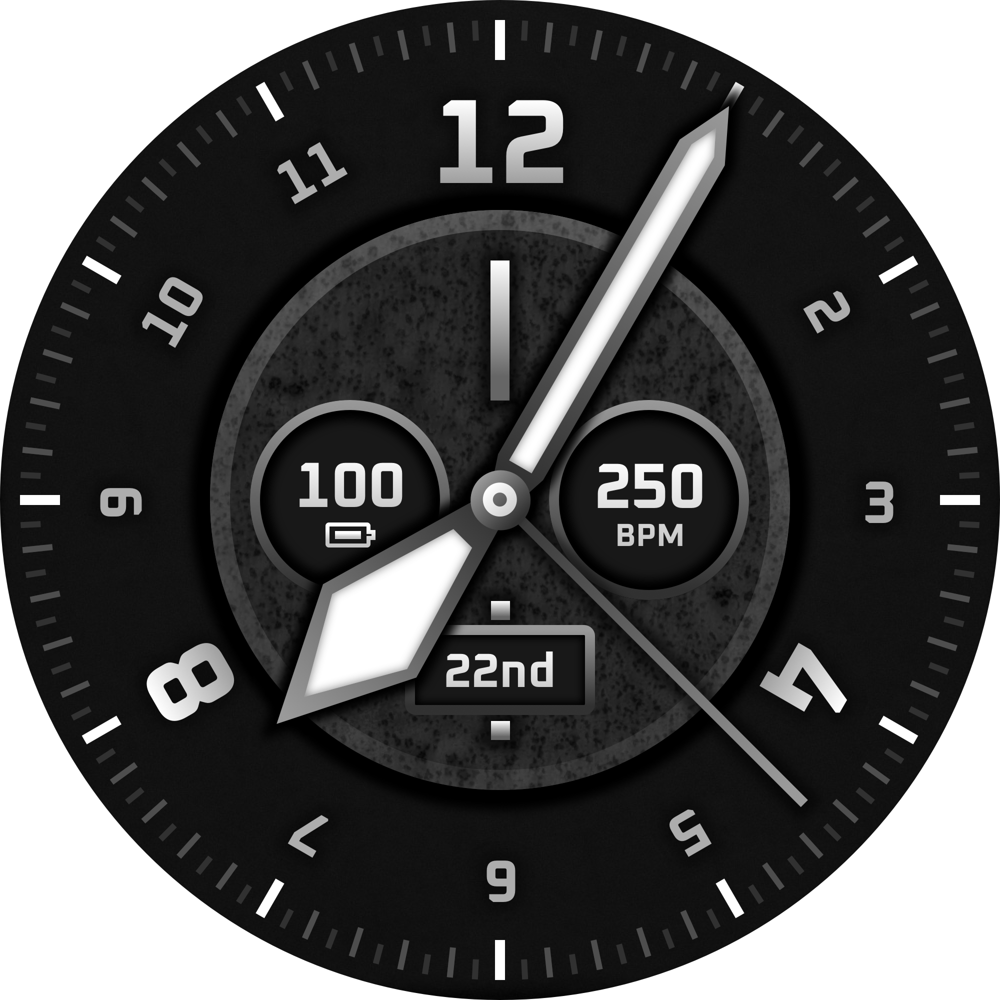
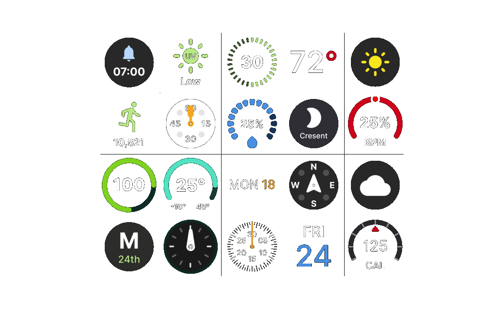

Classic
A vintage dial with heartrate, battery, and date complications. Nautical, wartime-inspired styling with character and readability for the traditionalist.
Proudly supporting RNIB
Olympus is proud to donate 100% of the proceeds from the Creators Toolkit to the Royal National Institute of Blind People (RNIB). Your purchase directly supports one of the UK’s leading charities in empowering blind and partially sighted individuals to transform their lives.


A vintage dial with heartrate, battery, and date complications. Nautical, wartime-inspired styling with character and readability for the traditionalist.

Clean, minimal, and true to the Olympus brand. A white dial that keeps things simple, timeless, readable, and easy to wear every day.

Bold, space-age styling with a tripolar layout. Battery, heartrate, and date sit among rotating particles that echo the sweep of a seconds hand.

Designed with sport in mind, using three clear complications in a tripartite layout. Modern, purposeful, and easy to read when you’re on the move.

A core analog layout built for everyday utility. Compass, calorie, and weather complications sit on a clean, high-contrast dial designed as the essential building block of the Olympus collection.

Showcase your custom watch faces in 3D to see them in the best light. Our specialized Creators Toolkit is built specifically for this purpose, offering stunning realism and an immersive experience. It is the ultimate presentation.

The built-in library provides comprehensive, ready-to-use UI complications. Use these pre-made elements as scalable components to rapidly wireframe and lay out your own custom, efficient watch faces with ease. Streamline your entire design process.

Superimpose your designs onto realistic 3D smartwatch mockups like Galaxy Gear. Leverage Sketch’s optimized vector tools and pre-made elements to efficiently create and layout circular interfaces. A perfect workflow for serious designers.